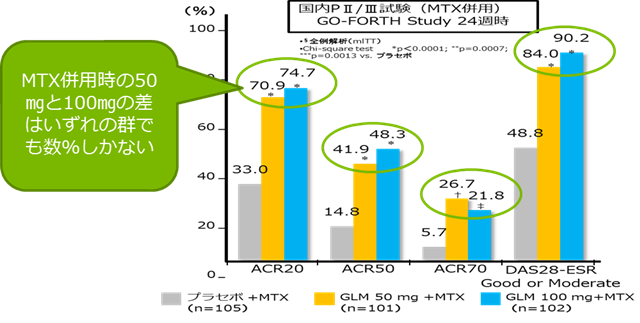
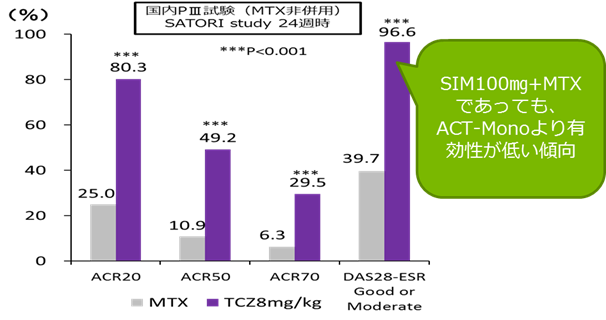

２．SIMは50㎎効果不十分な場合は、倍量の100㎎に増量できます（MTX併用の場合）

SIMは50㎎+MTXで導入頂き、効果不十分であれば薬剤を変更することなく100㎎に増量することができます。増量により有効性の向上が期待できます。

- SIM50㎎+MTXから倍の費用をかけてSIM100㎎+MTXにした場合の有効性は、ACR20/50/70、Good/Moderateの割合共にほとんど変わりません。数パーセントの有効性のために倍の薬剤費（月に約25万）をかけて増量する必要性はあるでしょうか？
また、ACTはMTX非併用にて通常量で使用した場合、以下の通りSIM100㎎+MTXよりも高い有効性が期待できます。ACTであれば、月に約8万円と1/3の薬剤費で治療が可能です。

Y.Tanaka ,et al;Ann Rheum Dis 2012;71:817–824.
